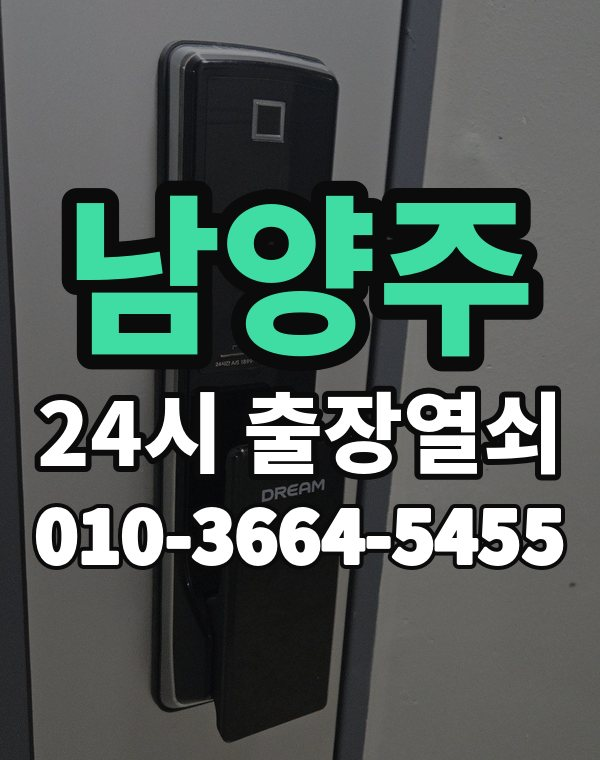

남양주 출장열쇠, 이런 동네입니다
남양주는 다산, 별내 신도시 아파트와 진접, 화도, 오남 주택가가 넓게 흩어진 지역입니다.
신도시 쪽은 새 도어락, 읍면 쪽은 오래된 도어락이 많습니다.

남양주시 출장 가는 동네
- 다산동
- 별내동
- 평내동
- 호평동
- 금곡동
- 와부읍
- 진접읍
- 오남읍
- 화도읍
- 퇴계원읍
- 진건읍
다산동 출장열쇠, 별내동 열쇠집처럼 동네 이름으로 찾으셨어도 같은 곳입니다.
적혀 있지 않은 동네도 남양주시 안이면 다 갑니다.
남양주에서 하는 일
남양주 출장, 이렇게 알려주세요
동네 간 거리가 멀어 정확한 주소를 먼저 받습니다.
전원주택 대문 잠김도 출동합니다.
도농역, 별내역, 평내호평역, 진접역 근처라고 말씀해 주셔도 위치 잡기가 쉬워집니다.
가까운 역이나 큰 건물, 단지 이름을 같이 알려주세요.
- 주소와 건물 이름 (아파트면 동, 호수)
- 문 종류, 번호판이 켜지는지
- 사시는 걸 확인할 신분증이나 우편물이 있는지
전화부터 작업까지 순서는 이용안내에 적어 두었습니다.
남양주 출장열쇠 자주 묻는 질문
남양주 어느 동네까지 오시나요?
다산동, 별내동, 평내동, 호평동, 금곡동, 와부읍 등 남양주시 전 지역 갑니다. 목록에 없는 동네도 전화로 위치만 알려주시면 됩니다.
남양주에서 밤늦게나 새벽에도 오시나요?
시간 상관없이 출동합니다. 주소를 받으면 도착 시간부터 알려드립니다.
끝내 못 열면 돈은 어떻게 되나요?
열지 못하면 비용은 없습니다. 작업 전에 금액을 듣고 정하시면 됩니다.
세입자도 문을 열어 주시나요?
사시는 분이 맞는지만 확인되면 됩니다. 신분증이나 우편물을 준비해 주세요.
남양주 도어락 수리나 교체도 하시나요?
네, 합니다. 문에 맞는 제품인지 보고, 고칠 수 있으면 수리를 먼저 권합니다.